Now you're ready to go - notice that track alignments are shown on the map.
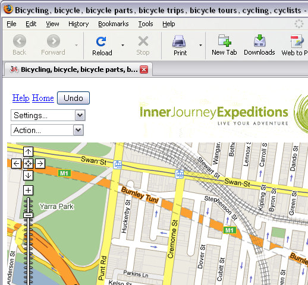
Satellite and Hybrid views are also available (buttons top right of screen).
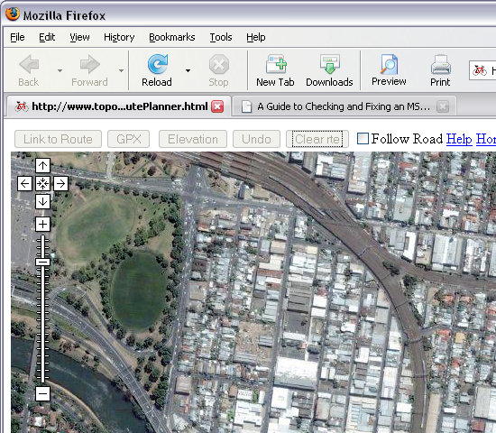
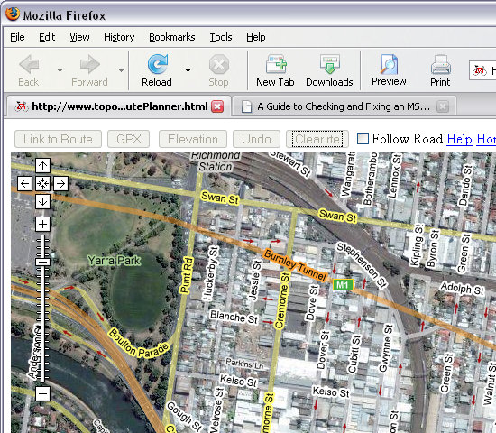
From the Settings drop-down box, select "Don't Follow Road":
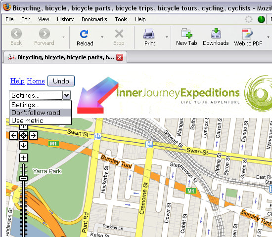
Click on the where you want to place your first Marker. A red pointer appears (arrowed).
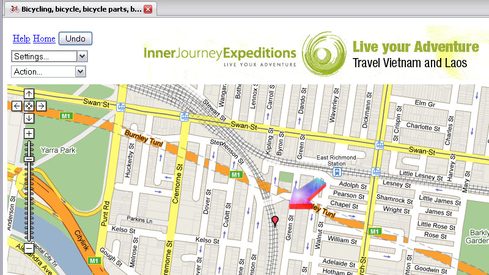
Click on location for second marker - a blue line appears linking to the previous marker. Continue this process until you have marked out your track alignment. Markers can be placed closer together to get around curves.
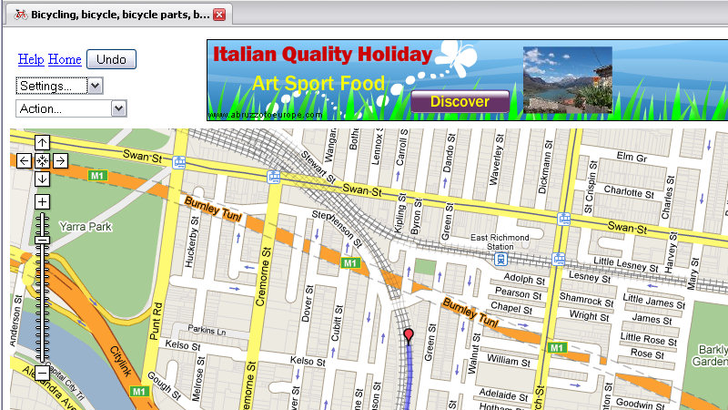
Once you have marked out the route, Now it is time to create the data needed for the Marker file.
From the Actions, drop-down box, select "Save as GPX" (arrowed)
The message box appears - press OK.
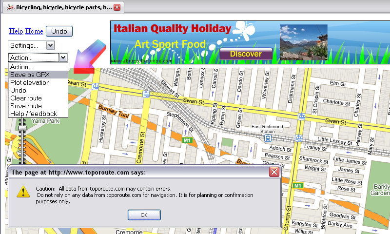
The following message then appears: Save the file.
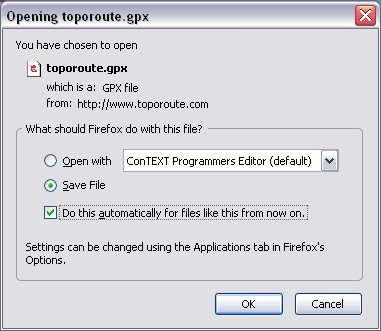
If you're interested, you can open the GPX file in your favourite text editor and it will look something like this:
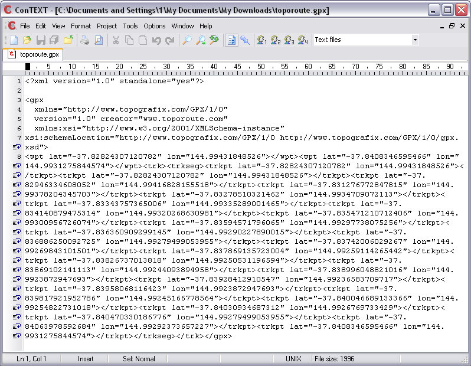
Now open Route_Riter.
Browse to, and select your saved .GPX file (arrow #1 below).
Click on "Convert Google .kml or .gpx to .mkr" (arrow #2 below).
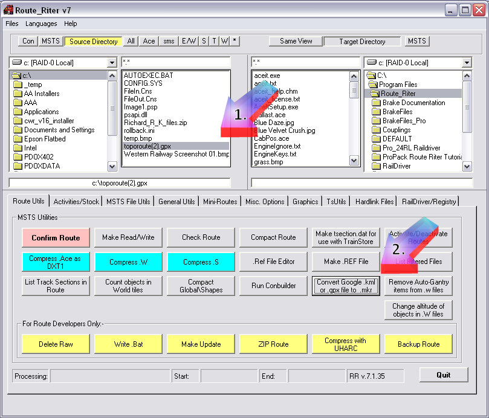
Browse to your route, select a filename (preferably same as the .trk file, but make sure suffix is .mkr and click "ok":
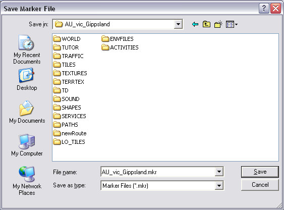
Open the .mkr file in ConTEXT or similar Unicode-aware Text Editor and it will look something like this:
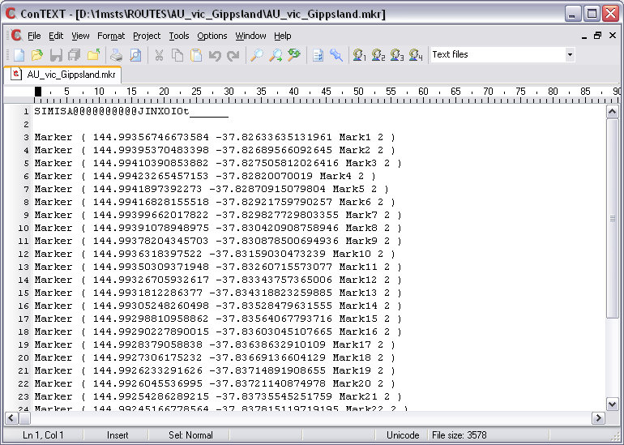